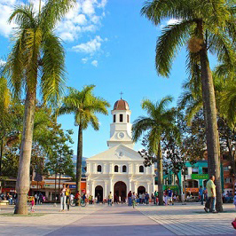
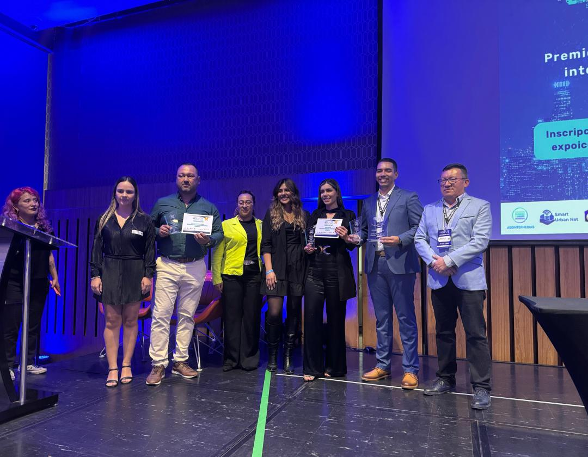

NOTICIAS RECIENTES
DESARTICULACIÓN DE BANDAS DE "APARTAMENTEROS"
Fecha: 5 de junio, 2025
Resultado: las autoridades judicializaron a una persona y se identificaron tras
más,
gracias a un operativo conjunto entre la Policía Nacional y la Secretaría de
Seguridad
local.
Descripción: En un operativo conjunto entre la Policía
Nacional y la
Fiscalía, se logró la desarticulación de una banda dedicada al robo de
apartamentos en
Itagüí. La operación culminó con la judicialización de una persona y la
identificación
de varios miembros más de la banda. Las autoridades continúan con las
investigaciones
para capturar a los demás implicados y garantizar la seguridad en la zona.
PREMIO EXPO SMART CITIES
Fecha: 30 de mayo, 2025
Reconocimiento: Itagüi recibió el galardón gracias a su programa "Internet para
todos",
que mejoró los indicadores de seguridad y conectividad.
Descripción:
Itagüí fue galardonada con el premio Expo Smart Cities por su innovador programa
"Internet para todos". Este programa ha logrado mejorar significativamente los
indicadores de seguridad y conectividad en la ciudad, proporcionando acceso a
internet
de alta calidad a comunidades vulnerables. El reconocimiento destaca el
compromiso de
Itagüí con la inclusión digital y el desarrollo sostenible.
REDUCCIÓN DE ACCIDENTES DE TRÁNSITO
Fecha: 27 de mayo, 2025
Disminuyó en un 65% la mortalidad por siniestros viales en comparación con el año
anterior, especialmente en la autopista Sur.
Descripción:
Itagüí ha logrado una notable reducción del 65% en la mortalidad por siniestros
viales
en comparación con el año anterior. Esta mejora se atribuye a las nuevas medidas
de
seguridad implementadas, especialmente en la autopista Sur, una de las vías más
transitadas de la ciudad. Las autoridades locales continúan trabajando en
estrategias
para mantener y mejorar la seguridad vial, promoviendo campañas de
concientización y
mejorando la infraestructura.